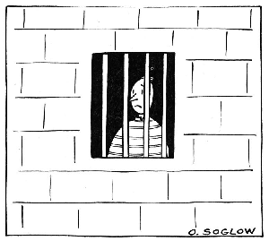
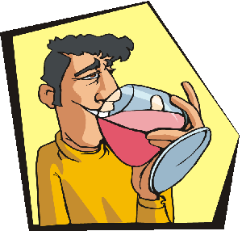

Let’s take a look at what being careless and/or reckless means when it comes to driving:
What terrible things can happen if you do any of the above? The answers are not pretty:
Your vehicle could become badly damaged and in some cases the damage may be so severe that fixing it would cost more than the value of your vehicle. You may even have your vehicle impounded in certain cases. If you love your car, or if you can’t afford to get another one, think twice before being careless while driving.
This is undoubtedly the most serious and tragic thing that could happen, and the fact is that it does happen and frequently. Roughly 300,000 thousand people have died as a result of driving accidents in the last 5 years in the U.S. alone. A serious accident could end up injuring you, your passengers, other drivers or pedestrians. Serious injury includes fractures, damage to organs, concussions, scarring surface wounds, and third degree burns.
So let’s see, if you are lucky enough to bypass all the other tragic things that could happen, you still have to deal with your car insurance company. If you are someone who drives recklessly quite often then this is probably going to be a problem you are going to face. If you get more than 1 traffic ticket per 18 months, that’s more than one in a year and a half, then you can’t go to traffic school for your second violation. This means your insurance rates are going to go up. This can vary between insurance companies and the severity of your traffic violations.
Accidents and tickets can be expensive and often require a lot of your time and energy. In today’s fast-paced world, time is of the essence, and we just don’t have any of it to spare. Tickets and DMV actions require you to fill out tons of paperwork, wait in lines at the DMV, spend time in court, and keep deadlines that you would rather forget. Here are some of the fun things that can go on financially and legally:
Many of us drive daily and some for several hours a day in long commutes. The manner in which we drive can seriously impact our lives.
Financial impact: Thousands of dollars could be spent on parking tickets, traffic tickets, lawsuits, traffic school, damage to your or other’s vehicles. Having your license suspended or revoked could result in loss of wages due to lack of ability to drive to work or to see clients.
Legal impact: Nobody enjoys living under the dark cloud of pending lawsuits. Many lawsuits result in incarceration, which is even more undesirable.
Loss of freedom: Loss of driver’s license results in the loss of your ability to hop into your car and go where you want. You are obliged to ask for rides or use public transportation, which could severely impact your whole schedule, your flexibility, and your social life.
Physical and mental health: Constant run-ins with the law, dealing with tickets, injuries, and (god forbid) fatalities can exacerbate mental health conditions such as depression and anxiety. Traffic accidents can sometimes result in PTSD, which requires treatment. Severe traffic accidents can lead to injuries that could take months to heal, permanent health conditions as a consequence of the impact, and finally death. Yeah, nothing puts a damper on your life quite like death.
Reckless driving can cause accidents. When a driver is being reckless, they do not pay close attention to various things in their environment that prevent collisions. One cause of reckless driving is driver distractions, and these can most certainly cause collisions. Another major factor in collisions is speed, often a factor in reckless driving. Drivers who are careless can end up on the wrong side of the road or make an improper turn as they are not taking the time and consideration to pay attention to the important signs around them, or are not being patient enough to wait for other drivers.
Collisions are typically preventable, and the reason why so many collisions occur is that there are many instances in our lives when we engage in careless driving. The average driver engages in careless driving at least once in a while. Certain drivers are more careful than others, taking the time to heed traffic signs and regulations, knowing that their actions behind the wheel can cost lives. These drivers are not involved with as many collisions as drivers that are careless, impatient, or distracted.
The DMV operates on a point system and maintains a public record of any traffic infractions you may have gotten. Each infraction stays on your record for 36 months and sometimes longer depending on the infraction. It is important to note that 2 point violations, such as reckless driving or failure to stop in the event of an accident, stay on your record for 7 years. DUI’s stay on your driving record for 10 years. If you have too many driving infractions you may become labeled by the DMV as a “negligent operator”. The Negligent Operator Treatment System (NOTS) works on the point system.
You could be labeled by the DMV as a negligent operator if your driving record reflects the following point totals:
What violations could add up to one point on your record? Some examples of one point violations include traffic convictions and at-fault collisions. Examples of two point violations could be reckless driving, hit-and-run collisions, Driving Under the Influence (DUI) of alcohol/drugs, or driving with a suspended or revoked license.
If you get 4 points in 12 months, you will lose your driver's license.
Note: If you have had a DUI and are taking this traffic school, please be warned that drivers with DUIs are not eligible for traffic school. You are welcome to take the course if you want to brush up on your knowledge, but it will not mask any points from your ticket.
The impact of drug and alcohol use on driving is one of the most important topics in driving safety today. Collision statistics show a significant number of deaths and injuries as a direct result of alcohol and drug use while driving. This is especially true among under drinking aged drivers! In fact, the leading cause of death among drivers ages 16-19, is alcohol and/or drug related car accidents.
Alcohol slows down the speed at which the brain receives signals from the rest of the body, and slows down muscle reaction impairing both gross motor and fine motor functions. All senses are impaired and reaction times are much longer than when in a sober state. Drinking can decrease your ability to pay attention to more than one thing at a time, which can be dangerous for drivers as we are always multitasking while driving – even if we are not aware of it.
It is approximated that 40% of all traffic deaths involve alcohol. Driving under the influence of alcohol endangers the life of the driver who’s intoxicated and the lives of people in their proximity.
Alcohol is a powerful and often devastating drug. It takes only minutes before it is absorbed directly into the bloodstream and absorbed by all of the fluids within the body's tissue. Alcohol acts on the autonomic nervous system and it is a nervous system depressant, the opposite of drugs like speed or cocaine.
It only takes a small amount of an alcoholic beverage to increase your chances of being in a traffic collision, particularly if you are a lightweight or have low tolerance.
Legal Limits in California for Blood Alcohol Concentration (BAC):
Driving under the influence of drugs has the same penalties as driving under the influence of alcohol. Drugs include illegal street drugs, such as cocaine, heroin, LSD, etc. They also include prescription drugs, such as Codeine and Benzodiazepines, whether they are lawfully prescribed or not. Over the counter drugs, such as Diphenhydramine (the ingredient in Benadryl or Tylenol PM), can also cause you to get a DUI.
Drinking and doing drugs at the same time can produce more impairment than drinking or using drugs alone. Alcohol and drugs intensify one another’s effect. This intensifying effect is called synergism.
Let’s now take a look at the many ways getting a DUI can negatively impact your life.
1.Emotional Impact:
Most people don’t realize what a huge effect DUI’s have on a person’s life. The stigma alone can make a person feel alienated. Along with that comes shame when confronted with family, spouses and children who know about the DUI. The person may feel he/she needs to keep it a secret as a result, which can make the person feel even more isolated.
Many cases of drunk driving end up in tragedy when you or others are killed or injured. Living with the guilt and trauma of this becomes a serious and heavy emotional burden.
Consider also loss of freedom. No longer will you be able to drive where you need to go, and will be required to take public transportation, walk, ride a bike, take expensive cabs, or rely on other people for rides. This inconvenience can affect both your business and your personal life. Getting a DUI usually results in a suspension of your driver’s license. In order to have it reinstated you will need to show proof of a valid car insurance policy satisfying minimum coverage. This will likely mean much higher insurance premiums, which could take its toll on your finances and create limitations on your spending. Some people are not able to afford this and their lives are impacted significantly by it.
A lot of insurance companies charge convicted DUI offenders two to three times more for coverage than a person that has not had a DUI—and in many cases, it will be years before your rates will be reduced.
You will likely end up with upset spouses, family members and friends. This can cause them to see you differently. They might start to lose trust in your ability to be responsible and in your decision making. The DUI offender can go through stigma, embarrassment, and shame.
Not all people who get DUI’s are alcoholics, rather people that have made a very bad choice at one point in their lives. A DUI conviction affects other people‘s perspective of you. Many will assume that you have a problem with alcohol which can lead to further shame.
2. Financial cost and added restrictions over 10 year period:
If you took a chemical test showing 0.08% or higher blood alcohol content, your license will be suspended for 4 months. If you failed to complete a chemical test, your license will be suspended for one year.
If you get a DUI twice within ten years, you may end up getting the punishment of up to a year in jail, a fine of up to $1,000, and you may have to surrender your vehicle for up to 90 days. Probation requirements are that drivers complete an alcohol treatment program, consisting of at least 30 activity hours over at least 3 months.
If a person has three or more separate DUI convictions within ten years, the court may order a 10-year revocation of their driver's license. The court will consider the following when deciding whether or not to revoke a license for 10 years:
If the driver’s blood alcohol content is 0.20% or higher, or the driver refuses to complete a chemical test for the determination of the BAC, the requirements for the treatment program become a minimum of 60 hours over a period of at least 9 months.
An individual on probation for a driving under the influence offense may not operate a motor vehicle at any time with a blood alcohol concentration of 0.01% or greater, as determined by a preliminary alcohol screening test or other chemical test. This violation of probation will result in immediate administrative per se license suspension, and drivers who refuse or fail to complete a lawfully requested test will suffer the consequence of the suspension or revocation of their driving privileges for anywhere from one to three years.
For drivers convicted for the first time of driving under the influence with a BAC of 0.20% or higher, it is mandatory to have their driver's license suspended for 10 months. An individual convicted of more than one DUI within 10 years of a prior DUI conviction can have driving privileges reinstated, if he or she:
3. On victims and their families:
Many DUI incidents have an innocent victim. The victim is the person that is killed or injured by a driver who is under the influence of drugs and/or alcohol. The emotional devastation of losing a loved one to an accident involving DUI is unbearable for families of victims. Many are in shock and disbelief that their loved one died in such a senseless and tragic manner. Families endure unending anger and rage at the individual who caused their misfortune. Many never forgive the drunk driver no matter how terrible that person feels. Anger turns into bitter sadness and the cycle of grief can continue for many years. With those who are predisposed to mental instability, a trauma of this caliber can trigger depression and other emotional problems which can take years of therapy to resolve.
4. On society:
Drunk driving takes a large toll on society. It costs many thousands of lives a year and millions of dollars of burden on tax payers. According to the National Highway Traffic Safety Administration (NHTSA), from 2010-2012 approximately 30,000 people perished in DUI related accidents. It is also estimated that about 3 in every 10 Americans will be involved in a DUI related collision at some point during their lives. Traffic crashes are the number one killer of teens (ages 15 to 20), and 31 percent of teen traffic deaths are estimated to be related to driving under the influence.
Because of the costs of DUIs, governments are forced to allocate extra funds in order to finance DUI emphasis patrols. These extra provisions cost hundreds of thousands of dollars every year in tax payer dollars. In addition, response to DUI related traffic accidents will often require the dispatch of police, fire department and paramedic units. This puts a further strain on community moneys that could be put to use elsewhere.
Millions of lives are ruined by crashes involving driving under the influence. Beyond dollar estimates, the loss of human life for surviving family members and friends has tremendous emotional impact and thus an impact on society at large.